Clandestine Cult
3D Game Art & Level Design
2020
Download and play for free: clandestinecult.itch.io/clandestine-cult
Clandestine Cult is a first-person sci-fi puzzle game that takes the player on a journey through an abandoned
space station. Throughout the game, the player uses a gravity gun to move objects and solve riddles. The
further the player proceeds through a number of various levels, the more secrets of this mysterious place are
revealed...
In this study project, I was part of a team of 11 students. I worked on several parts, like designing the
moving-wall-mechanics of the second level, 3D modelling and texturing, as well as constructing and lighting
the levels in Unreal Engine 4.
Software: Cinema 4D (modelling), Substance Painter (texturing), Unreal Engine 4
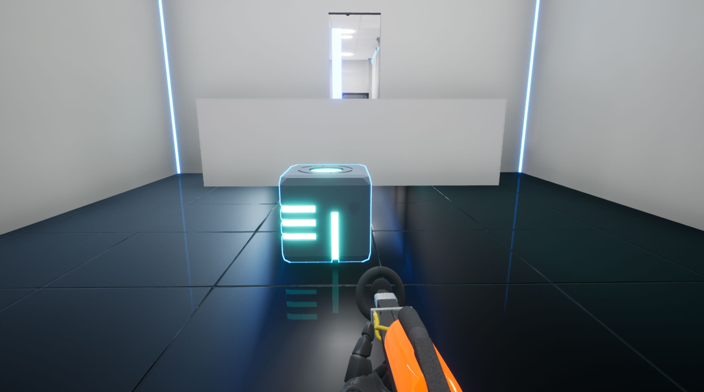
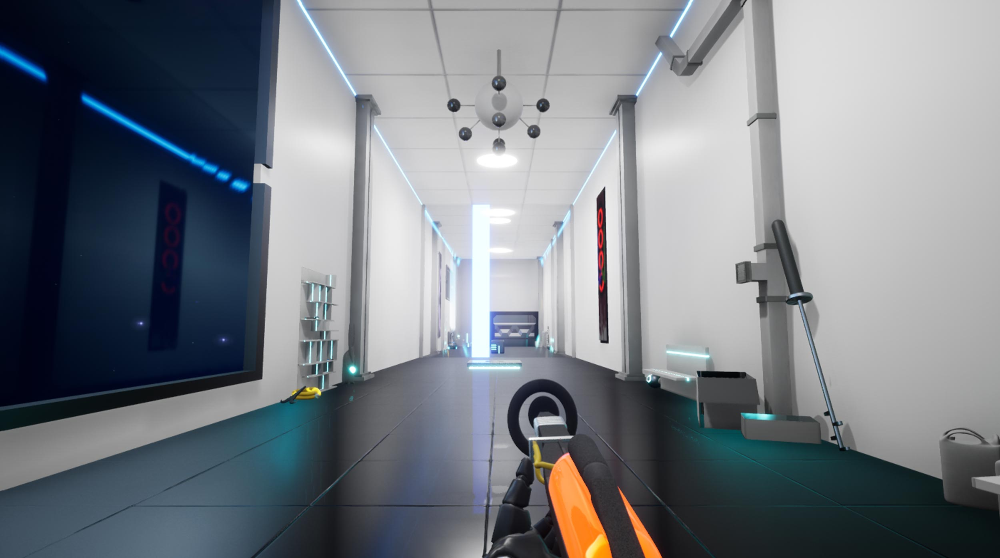
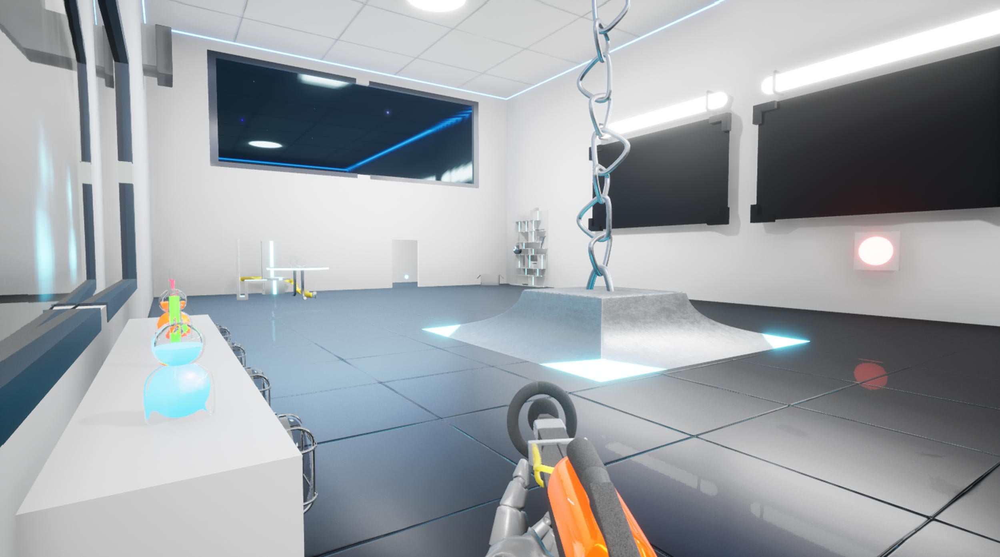
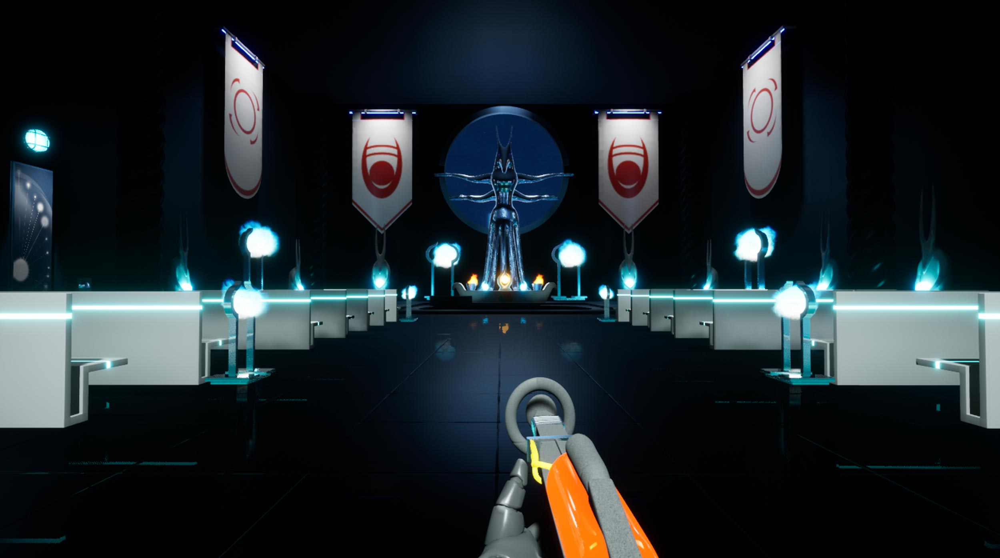
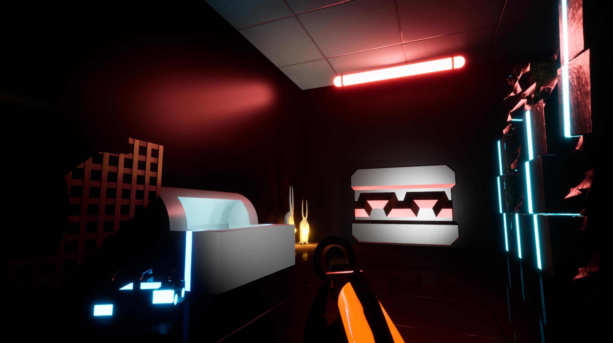

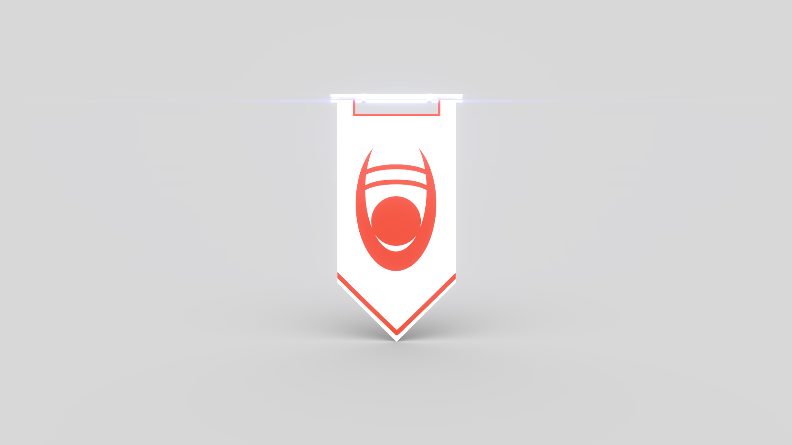
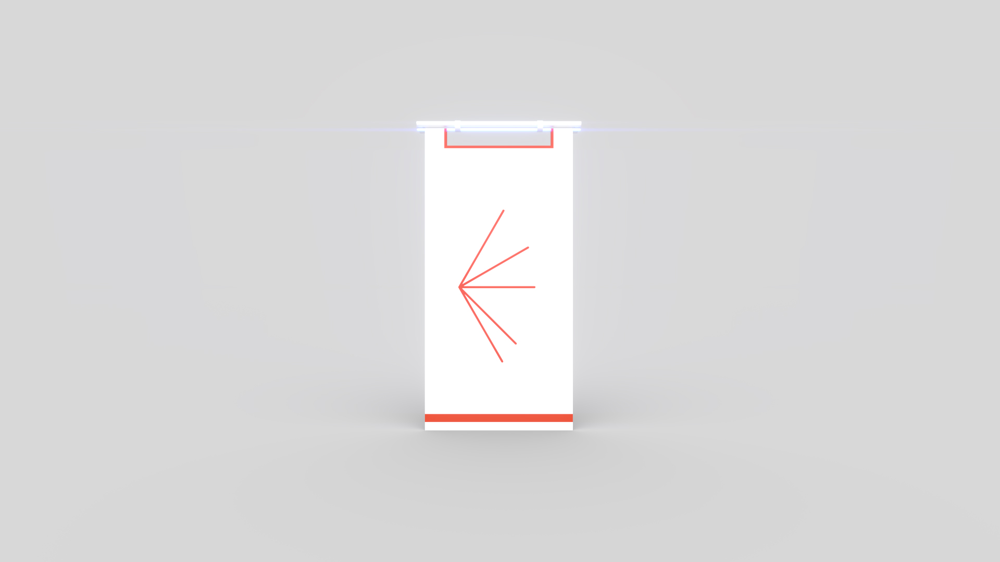
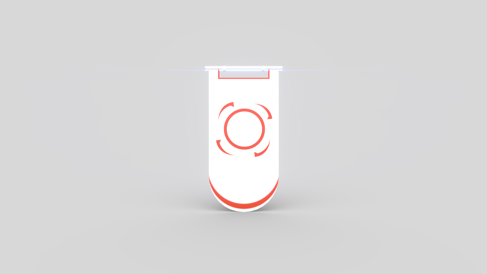
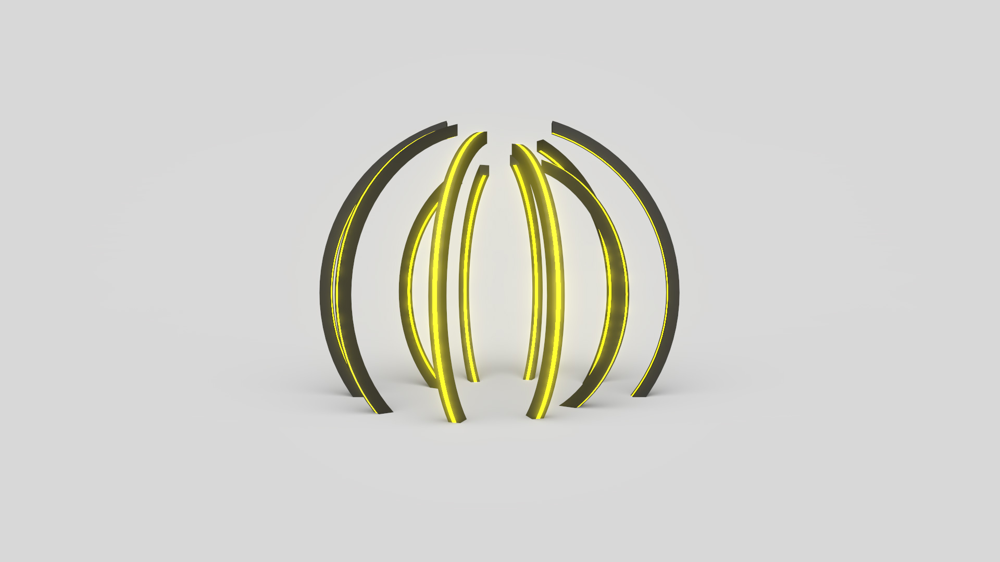
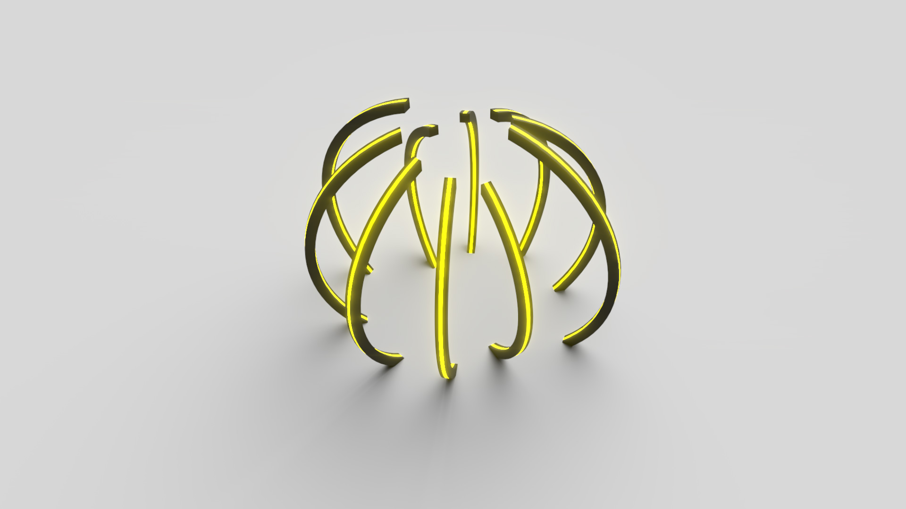
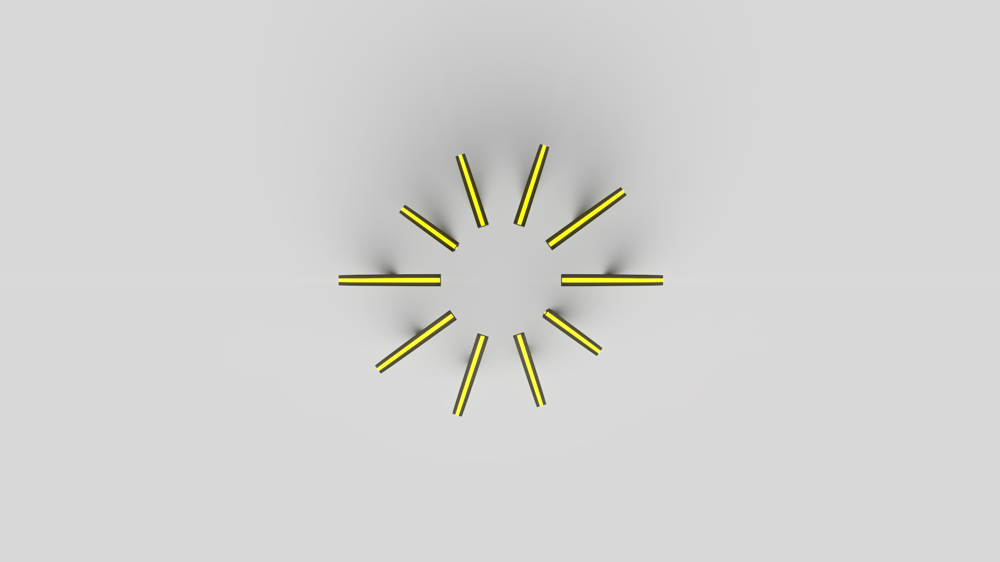